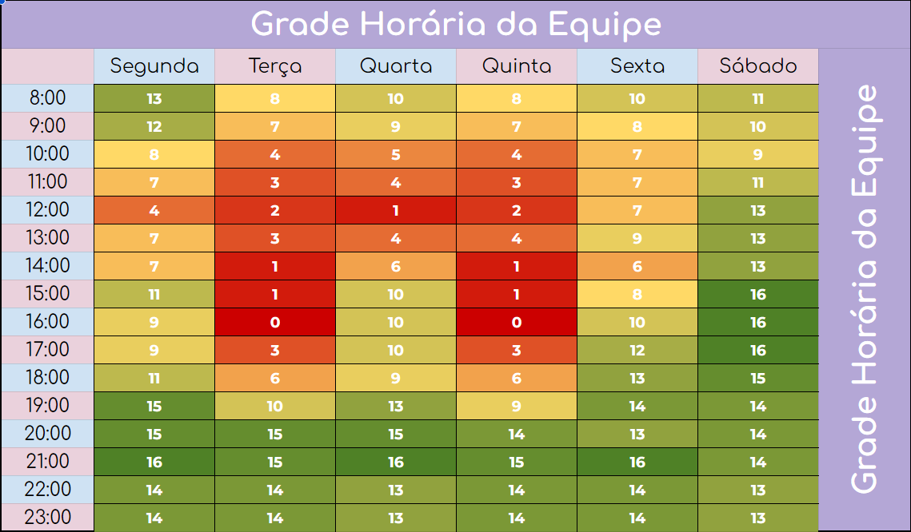

Planejamento de Comunicação
Este documento tem o objetivo de demonstrar o planejamento de comunicação da equipe, levando em conta suas comunicações internas e externas, sendo elas síncronas ou assíncronas, assim como as ferramentas utilizadas para tal.
1. Quadro de disponibilidade

2. Reuniões
| Dias |
Horário |
Reunião |
| Quarta |
19:00 - 20:00 |
Reunião com os POs |
| Quarta |
20:10 - 21:30 |
Planning |
| Segunda |
20:00 - 21:00 |
Review / Retrospectiva |
| Segunda à Sexta |
21:00 |
Daily |
3. Ferramentas utilizadas
|
Ferramenta |
Propósito |
 |
Discord |
Comunicações assíncronas com os POs e professor / Comunicações e registros de informações internas / Pareamentos |
|
Whatsapp |
Comunicação assíncrona entre o time |
|
Teams |
Reuniões síncronas com os POs e professor / Reuniões internas |
|
Google Drive |
Armazenamento de artefatos |
 |
Github |
Repositórios de documentação e código do projeto |
|
Zenhub |
Ferramenta de acompanhamento do projeto (Kanban, Roadmap, Issues e Sprints) |
4. Versionamento
| Data |
Versão |
Descrição |
Autor |
| 05/05/23 |
1.0 |
Criação do documento e adição dos itens |
Álvaro Guimarães e Gabriel Avelino |